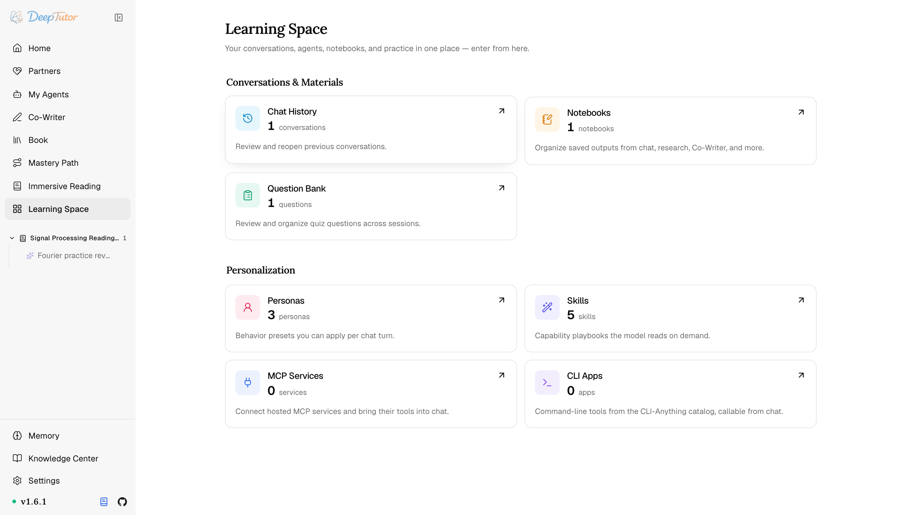
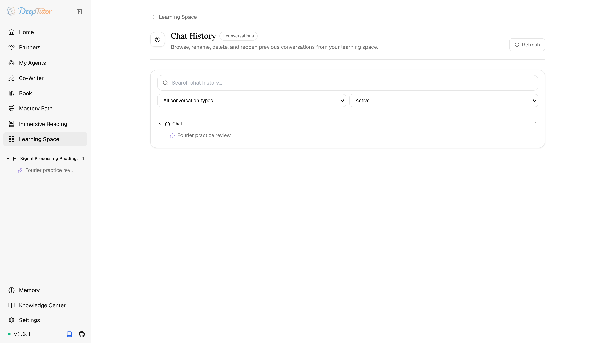
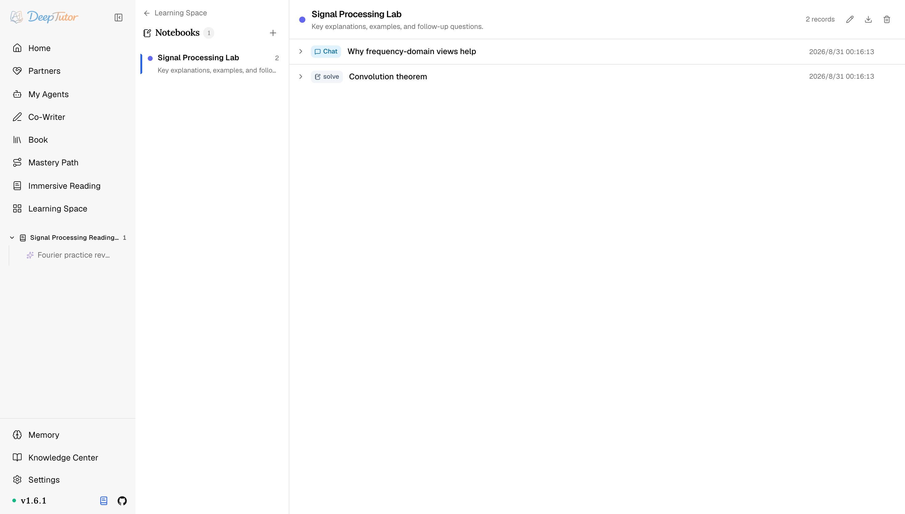
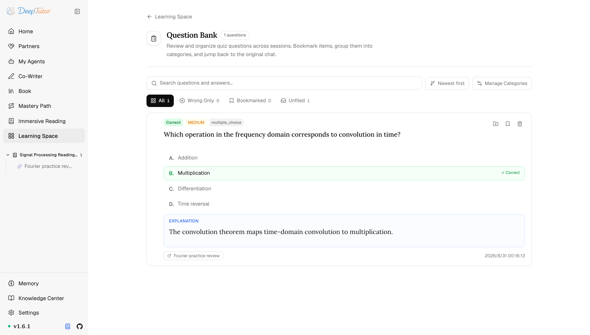
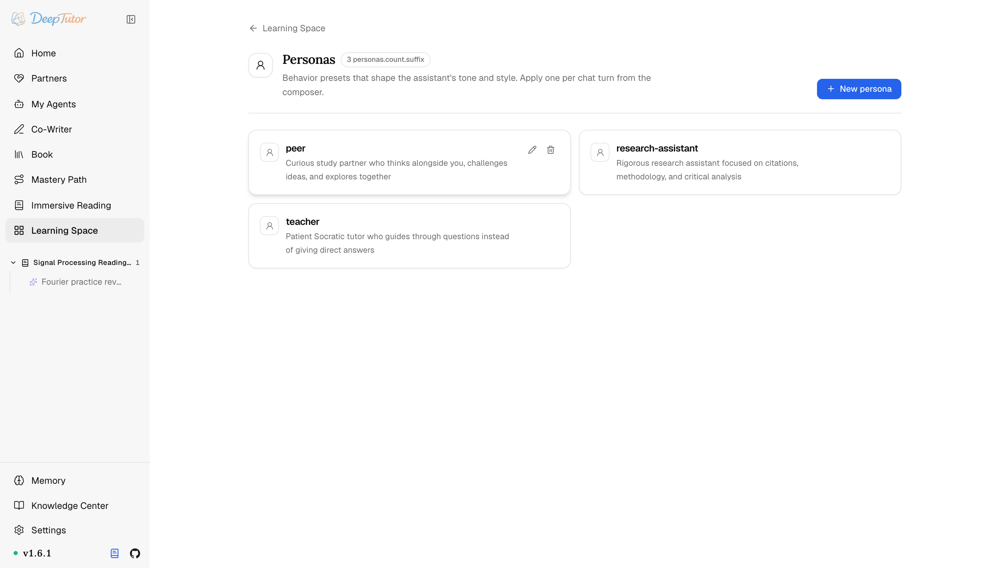

探索 DeepTutor學習空間
聊天記錄、筆記本、題庫一站收納！DeepTutor 學習空間全體驗：45 個 MCP 服務+101 個命令列工具免費用！｜零度解說
把組織化對話、材料與個人化集中到一處——聊天歷史、筆記本、題庫與人設。
原文連結：https://docs.deeptutor.info/zh-cn/explore/space/
聊天記錄散落在各個會話裡，筆記東一份西一份，生成的題目做完就忘。你的學習資料，是不是也缺一個統一的「家」？
這兩天我把 DeepTutor 的學習空間（Learning Space）從頭到尾翻了一遍。
這個頁面就是那個「家」：聊天歷史、筆記本、題庫、人設、Skill，外加 45 個精選 MCP（模型上下文協定）服務和 101 個命令列工具，全收在一處。
如果你當初跟我一樣，以為它只是個普通的「歷史記錄」頁面，那就低估它了，下面逐張卡片講清楚。
學習空間是什麼
學習空間是 DeepTutor 的資料庫、組織與個人化層。
所有會持續存在的東西都在這裡：過往對話、儲存下來的材料，以及塑造助手行為的各種預設。
之後會在支援對應型別的工作流裡提供這些資產與預設。
在哪裡開啟
從左側欄開啟 Learning Space：Conversations & Materials 包含聊天歷史、筆記本和題庫，Personalization 包含人設、Skill、MCP 服務和 CLI App。
精通之路現在是頂級側欄產品，不再佔用這裡的卡片。
部分部署還會在 More Projects 下顯示雙席位 Whisper 練習房間；它依賴儲存庫外的 whisper_visitor，本開源建置不含該能力，因此多數自託管安裝看不到這張卡片或空分組。

每張卡片都帶一個即時計數，於是這個樞紐同時也是一塊狀態板：你有多少段對話、多少個筆記本、連上了多少個服務。
對話與材料：四張卡片
課程學習（Course Study）——課程組織正在繼續打磨，暫時不出現在側欄與學習空間裡；已有課程資料與路由仍然保留。從已有課程頁啟動 Course Study 時，這項獨立能力會讀取綁定課程的整體狀態，推薦眼下最有用的下一步並說明理由，再把你交接到掌握路徑、沉浸式閱讀、題庫、筆記本或聊天。它負責課程編排，並不親自講授材料。
聊天歷史（Chat History）——每段對話都保留在這裡。可搜尋並按對話型別或封存狀態篩選，也可重新命名、釘選、封存、還原、刪除或重開；Little Tutor 嵌在來源對話下。還可從 + 選單引用會話。

筆記本（Notebooks）——把一段答覆變成持久、可複用上下文最簡單的方式。新增一個筆記本，然後從聊天、研究、夥伴或 Co-Writer 把記錄存進去——每條記錄都保留來源與時間戳。記錄可在筆記本間移動或複製，整本也能匯出為 Markdown。之後可在聊天裡掛載某個筆記本，或把它編譯成一本書。

筆記本在 /notebooks 有一塊自己的整頁控制台，選中某本時使用 /notebooks/<notebookId>，而不再是學習空間佈局裡的面板。已退役的 /notebook 與 /space/notebooks 不再重新導向。
題庫（Question Bank）——你生成的測驗題會連同你的作答、參考答案、對錯與解析一起收集在這裡。可以收藏題目、歸類到分類、用 Wrong Only（僅錯題）篩選，並跳回原始對話結合上下文複習。

題庫這個設計要誇一句：錯題自動封存，還能跳回原對話複習，對學生黨屬實是免費到寶了。
個人化：塑造你的助手
精通之路入口——精通之路不再佔用學習空間卡片；請從主側欄進入獨立的精通之路產品。它把目標與來源材料變成帶硬門檻的路線，並把學習對話歸到主題下面；主題地圖、建立流程、專屬導師與間隔複習集中在自己的 Explore 頁面。
人設（Personas）——塑造助手語氣與立場的行為預設。從輸入框選擇後，它會作為會話偏好在後續輪次持續生效。內建的 peer（同伴）、research-assistant（研究助理）、teacher（老師）是很好的起點；用 New persona 建立你自己的，並在建立夥伴時複用其中任意一個。

Skill 入口——Skill 卡片會開啟可搜尋的 SKILL.md 工作手冊庫與 EduHub 匯入器。創作方式、安全檢查、命令列工具（CLI）安裝和發布流程現在統一放在 DeepTutor 生態的 Skill 擴充裡。
MCP 服務（MCP Services）——一個收錄 45 個精選 MCP 定義的商店，包括按帳號連線的託管服務與管理員管理的部署伺服器。見 MCP 擴充。
CLI 應用（CLI Apps）——來自 CLI-Anything 目錄的 101 個命令列工具，裝在伺服器上，可在獲准的回合中呼叫。見 CLI-App 擴充。
45 個 MCP 服務加 101 個命令列工具，裝好就能直接用，這波屬實是免費。
想繼續深挖
- DeepTutor 生態 ——RAG 整合、Skill、MCP 服務、CLI App 與 EduHub
- 主頁 ——把學習空間資產掛載到一輪裡
- 夥伴 ——給夥伴分配技能、筆記本與人設
- 書籍 ——把筆記本與題庫編譯成一本書
- CLI 命令 ——從終端機管理技能與資產
實際體驗還會受到模型能力、提示詞以及個人使用習慣的影響，建議大家按自己的學習流程實際上手感受一下。